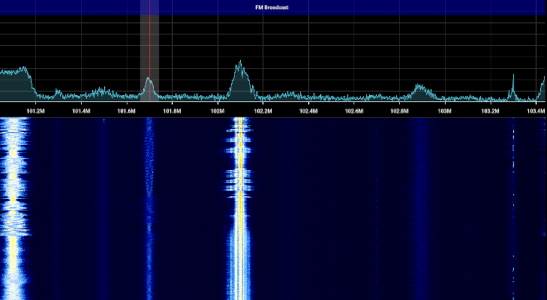

VHF Radio can typically only be received when you have line of sight to the transmitter. However, with certain atmospheric conditions VHF radio can travel far greater distances. For more information on VHF propagation check out VK3FS's video about it.
FM radio stations often transmit with relatively high power making them great targets for VHF propagation.
Any FM receiver can be used for FM DXing but there are some key features that will make it much easier.
This can help with tuning to weak stations or for obtaining the exact frequency of a station.
A good antenna, preferably 70cm or longer, will help greatly with reception.
SDRs make FM DXing even easier. They provide an FFT, display making it far easier to find weak stations. The bookmark feature in many SDR applications also helps with remembering frequencies.

Once you have found a weak station it can be difficult to identify its transmission location.
A useful website for this is Wikipedia.
Searching on Wikipedia for 101.7 will show a page with a number of stations broadcasting on that frequency.
It is important to listen to the station and get an idea of what it is broadcasting.
Once you have an idea of what it is broadcasting, refer to the Wikipedia list and find the station listing that matches what the station is transmitting.
The DX info centre website provides VHF propagation charts for different regions of the world:
Main page